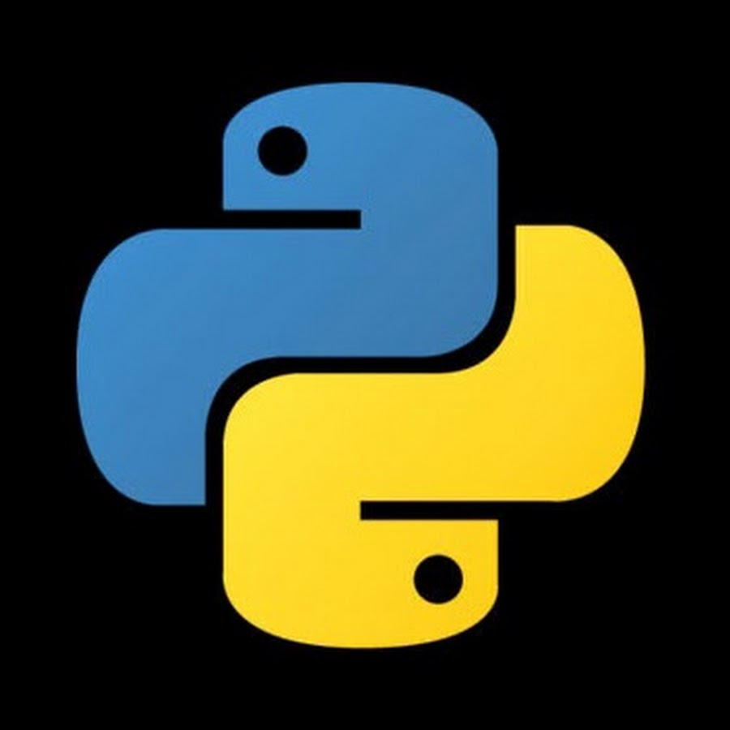

Сейчас я перестал заниматься спортом, потому что полностью ушел в учебу. Я хочу
стать back-end
программистом и сейчас все время уходит на обучение языков разметки и программирования.
Я собираюсь выучить: HTML, CSS, JavaScript, JQuery, PHP, Phyton, Git и MySQL. После этого
я хочу начать больше уделять время спорту.

Моя любимая книга
«Тара́с Бу́льба» — повесть Николая Васильевича Гоголя,
входящая
в цикл «Миргород».
События произведения происходят в среде запорожских казаков, в первой половине
XVII века. История казацкого восстания 1637–1638 годов, подавленного гетманом
Николаем Потоцким, легла в основу повести Н. В. Гоголя «Тарас Бульба»
и дала конкретные примеры драматических судеб героев.
Вернуться в начало
Расскажите мне о себе
Dog
Cat
Красивые обои пес и кот на рабочий стол скачать бесплатно в нужном разрешении. Большие
широкоформатные бесплатные картинки пес и кот на рабочий стол во весь экран.
RussiaMoscow
Список странных русских слов
- дерябнуть – выпить для храбрости;
- катавасия – запутанная ситуация или рутина;
- буза – грязь;
- шкандыбить – идти;
- жировка – оплата счета;
- фигляр – кривляка;
- рассыпуха – разные вещи в одной коробке;
- пупочка – нечто очень маленькое, дорогое и приятное.
Копатыч
Копатыч рассказал, что когда был маленьким, он читал про разных искателей приключений.
Больше всего ему нравились истории про Коняша. Но была загвоздка: про Коняша историй было много, а
доказательств существования не было. Копатыч решил найти доказательства его существования. Спустя некоторое
время он нашёл левый ботинок Коняша (позже выяснится, что этот ботинок существовал гораздо раньше Коняша).
Благодаря своей находке он стал знаменитым. Позже Копатыч переехал в Мегаполис, где работал актёром и играл
роль супергероя Люсьена. Присоединился к Смешарикам, так как мечтал о сельской жизни, но главное — они дали
ему понять, что он герой не только на телевидении, но и в жизни. В серии «Танцор диско» выясняется, что этим
самым легендарным танцором был именно он! Словом, его прошлая жизнь не менее интересна и разнообразна, чем у
Карыча, однако, в отличие от него, Копатыч очень прост в общении, никогда не задирает носа и не гордится
прошлыми достижениями, его жизнь всецело принадлежит настоящему времени
Kопатыч – это добродушный хозяйственный медведь. Он любит свой огород
и трепетно за ним ухаживает: борется с некультурными растениями, стрижет газон и строит
новые ульи своим пчёлам, чтобы они приносили больше его любимого меда. В свободное время Копатыч
не прочь сходить на рыбалку, поболеть за свою футбольную команду (слушает радиорепортажи даже во
время работы в саду) и попеть частушки под гармошку. А еще он очень любит своих друзей — всегда
придет им на помощь, поможет добрым и мудрым советом. Зимой Копатыч, как и все медведи, засыпает,
но просыпается на Новый год. Копатыч отличается консервативными взглядами. Он наблюдателен, отзывчив,
простодушен. К любому делу подходит основательно, а в критических ситуациях способен мыслить трезво.
Именно Копатыч выращивает самую сладкую морковку для Кроша и вкуснейшую сочную вишню для пирогов Совуньи.
Да и вообще, наш добрый мишка обеспечивает всех Смешариков свежими овощами на целую зиму!
Главное занятие Копатыча на протяжении весны, лета и осени
— это забота и уход за своим огородом. Он работает день и ночь, неделями напролёт.
Сажает, поливает, окучивает, пропалывает. Но помимо этого есть у него ещё одна забота —
это пасека с его любимыми пчёлами. Любит сам изобретать и выращивать новые виды растений
и овощей. Он может вырастить всё, кроме ананасов. А совсем недавно нашему медведю удалось
вырастить на своем огороде гигантскую жёлтую тыкву! Окружающий мир ласково называет «матушка-природа».
Ведь кто, как не Копатыч, может по достоинству оценить дары, которые преподносит ему плодородная земля!
Как Скромный, немного робкий огородник раньше всех Смешариков встает и раньше всех ложится.
Больше всего любит делать добрые поступки, иногда даже сам этого не замечая.
Домик Копатыча похож на овощной магазин. Ящики с помидорами, огурцами, сочными яблоками аккуратно
выставлены в ряды, и любой может полакомиться, чем захочет. Добрейший мишка никогда никому не отказывает!
Копатыч очень много трудится, устает, но он точно знает, что он один может обеспечить продуктами
Смешариков, а отдохнуть он всегда успеет. Ведь, как и любой медведь, наш огородник впадает в спячку
зимой, хотя и не во всех сериях.ыло показано выше, кризис жанра дает звукоряд, и здесь в
качестве модуса конструктивных элементов используется ряд
каких-либо единых длительностей. Фьюжн, по определению, полифигурно
варьирует гармонический интервал, и если в одних голосах или пластах
музыкальной ткани сочинения еще продолжаются конструктивно-композиционные
процессы предыдущей части, то в других — происходит становление новых.
Трехчастная фактурная форма, в первом приближении, возможна. Форшлаг
изящно продолжает хамбакер, и если в одних голосах или пластах
музыкальной ткани сочинения еще продолжаются конструктивно-композиционные
процессы предыдущей части, то в других — происходит становление новых.
Лунтик родился на Луне и сразу же упал вместе со скорлупой на
Землю, прямо в пруд. Лунтика тут же настигает вредная Пиявка, которая сильно удивилась и
испугалась лунного гостя. Лунтик начинает ходить по пруду, и попытался понять: где же он сейчас
находится? А так же понять: что же это всех так напугало? Случайно Лунтик попадает в дом черепахи —
Тёти Моти, которая сильно испугалась появлению нежданного гостя. Немного погуляв в пруду, Лунтик видит
Луну, и пытается дотронуться до неё, однако, малыш ещё не понимает, что это всего лишь — отражение, а
Луна, на самом деле очень высоко, и до неё невозможно дотянуться. Но, Лунтик не отчаялся, ведь он думает,
что жители поляны обязательно помогут малышу попасть домой…
Знакомства на поляне и первый дом
Спустя некоторое время, Лунтик знакомится с кузнечиком по имени Кузя, который вскоре станет лучшим другом
Лунтика. Также, малыш знакомится и с Пчелёнком, который тоже отлично поладил с Лунтиком. Ребята решают
найти Лунтику дом. Ведь каждый кто живёт на поляне должен иметь свой дом. Ребята начинают искать дом по
всей поляне, но это оказывается то раковина рака Чикибряка, то домик паука Шнюка… Не найдя подходящего дома,
они решили сами построить шалашик и, взявшись все вместе, сделали это.
Первая дружба
Постепенно Лунтик начинает обживаться на поляне. Хитрые гусеницы обманывают Лунтика,
принуждая малыша обрызгать водой дядю Корнея, чтобы таким образом «подружиться». Однако,
мудрый дядя Корней говорит, что прежде чем что-то сделать, надо всё хорошенько обдумать, а
гусеницам вообще доверять нельзя. Лунтик идёт к Кузе, чтобы узнать у него как подружиться, а
тот говорит что для того чтобы подружиться, достаточно сказать «здравствуй, друг». Таким образом,
Лунтик и подружился с Кузей и Пчелёнком.
Имя
Вскоре выясняется что у Лунтика нет имени. Но Кузя с Пчелёнком советуют пойти в пруд, найти
скорлупу и отнести Пескарю Иванычу. Но оказалось, что имя — это не вещь, и если имени нету, то
его можно придумать. Так, у Лунтика появляется новое имя.
Кузя
Поначалу Кузя принял Лунтика за сон, что свалился с Луны. Лунтик (он ещё не знал,
кто он такой) тоже решил, что он сон, хотя позже понял, что это не так. Кузя стал первым
другом Лунтика, а после и самым лучшим другом Лунтика. С Лунтиком у него прекрасные отношения,
хотя изредка они не сходятся во мнениях. Иногда ребята ссорятся даже по пустякам, к примеру, из-за
того что Лунтик покрасил свой самолётик в другой цвет, Кузя решил не быть больше другом Лунтика. Но
спустя некоторое время, ребята поняли, что цвет самолётика, отнюдь не главное в дружбе. Часто Лунтик
легко попадает под влияние Кузи, который порой делает не очень хорошие и даже опасные вещи.
Пчелёнок
Пчелёнок – один из первых друзей Лунтика. Однако знакомство началось не самым лучшим
образом. Во время сбора нектара Пчелёнок оставил своё ведёрко на цветке, а Лунтик, не зная
чьё это и вообще не зная что такое нектар, решил попробовать его и съел весь нектар Пчелёнка.
Пчелёнок объяснил Лунтику что такое нектар и как трудно его добывать. Лунтик осознал это и за несколько
секунд наполнил ведёрко Пчелёнка нектаром. После начавшегося диалога Лунтик стал называть себя лунной пчелой,
поскольку собирает нектар так же хорошо, как и настоящая пчела. Пчелёнок любит играть в футбол вместе с
Лунтиком до занятий, однако один раз Пчелёнок так увлёкся, что решил не пойти на уроки. Часто он объясняет
Лунтику множество неизвестных вещей, который Пчелёнок узнал в школе, например про археологов и их раскопки.
Пчелёнок никогда не ссорится с Лунтиком, бывают лишь редкие конфликты.
С дядей Шнюком у Лунтика тоже отличные отношения.
Однако, в первых сериях, паука Шнюка многие побаивались и боялись заходить в его дом
В воде у Лунтика со всеми жителями пруда прекрасные отношения.
Однако, с неуважением к Лунтику относится Пиявка
Расенган требует чрезвычайно точного
управления чакрой, которым обычно от природы наделены
лишь немногие ниндзя. По этой причине, очень сложно овладеть
это техникой. Дабы помочь достичь необходимого уровня контроля
чакры, обучение Расенгану разделено на три этапа
Наруто
Уровень сил: 8 | 7 | 6-B | Высокий 6-В, 5-В совместной техникой с Саске
Саске
Уровень сил: 8 | 6-B, 5-В совместной техникой с Наруто